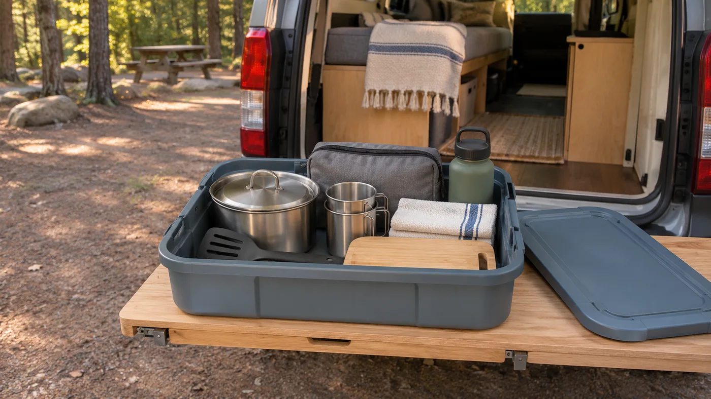

GEAR
A No-Drill Van Kitchen Kit That Fits in One Tote
Put together a portable kitchen around the meals you really cook, using gear you probably already own.

Illustration: Van Life Insider
A van kitchen can fill half your storage before you’ve cooked a single meal. Start with a shallower goal: can you make three meals you actually eat, then clean up, using the contents of one tote? If you can, you have a working kitchen without drilling a hole or buying a whole set of camp cookware.
Measure the opening, not just the space behind it
Pick a low spot where the tote can be secured while you drive. Measure the narrowest opening on the way in, then check the clearance with the lid, latches, and handles accounted for. Take the empty tote in and out while the bed and seats are in their usual positions. There’s little point in a bin that fits perfectly once you’ve moved your bedding, cooler, and shoes out of the way.
A shallow, rigid tote with a latching lid is a good place to start if you already own one. You want to see what’s inside without excavating it. The lid contains small items; it doesn’t restrain the tote in a sudden stop. Use suitable cargo straps and the vehicle’s designated tie-down points as directed by the manufacturer. NHTSA’s guide to securing cargo is a useful starting point.
Build the kit around three real meals
Write down one breakfast, one lunch, and one dinner you’d happily eat on a trip. A simple trial menu could be oatmeal, wraps, and rice with canned beans. Put the gear for those meals on the counter, then pack only what you actually touch as you make them. Start in your kitchen at home, where forgetting the can opener is a five-second problem.
- Cook: One pot with a lid, one stirring utensil, and an opener if your meals need it. Add a skillet only if the meals you make call for one.
- Prep and eat: A small board, a knife with a protective sheath, and one cup, bowl, and utensil set per person. A bowl can cover most plate duties.
- Clean: Dish soap, a small scrubber, a clean towel, and a washable bag for used tools until you can wash them. Bring clean water for washing as well as drinking.
This is a utensils-and-cookware kit, not a place to cram in a stove, fuel, or refrigerated food. Keep those separate. If you use a camp stove designed for outdoor use, follow its instructions and keep it outside the vehicle.
Pack for the order you use things
Put the cutting board and utensil pouch on top. Put the pot and any heavier pieces on the bottom. Nest the cups inside the pot and tuck a clean, dry cloth between the surfaces if they rattle. Give the small things that are easy to lose, like the opener, a dedicated pocket. If you can reach it without pulling everything out, you’re more likely to put it back.
Keep used utensils separate from the clean ones until you wash and dry them. The FDA’s food-handling guidance recommends washing food-contact tools with hot, soapy water and separating raw meat from ready-to-eat food.
Give it one ordinary overnight
Rehearse a quick meal, cleanup, and repack with the van parked. Try it with your usual gear still in place and check that the bin doesn’t obstruct a door or an aisle. After a short trip, sort the contents into three groups: used, didn’t use, and forgot. Leave the unused items at home on the next outing unless they serve an important backup purpose. Then make one targeted change: a bigger pot if it genuinely didn’t hold dinner, or a better pocket if the same tool went missing twice.
If you carry muddy gear through the same doors, give it a separate home rather than stacking it on the clean kitchen tote. Our camper van mudroom guide shows how to start with a small landing zone.
The point isn’t to make your kitchen as small as possible. It’s to be able to reach it, use it, and put it away again without rearranging the van. If one tote does that for the food you actually cook, the setup has earned its space.